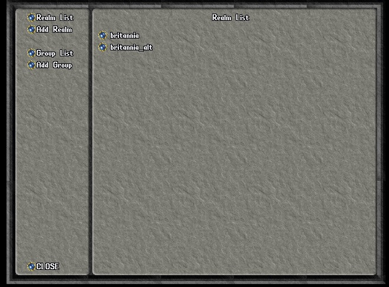
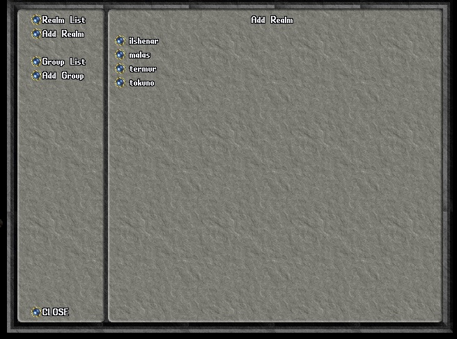
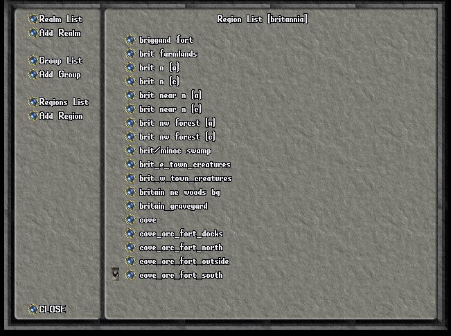
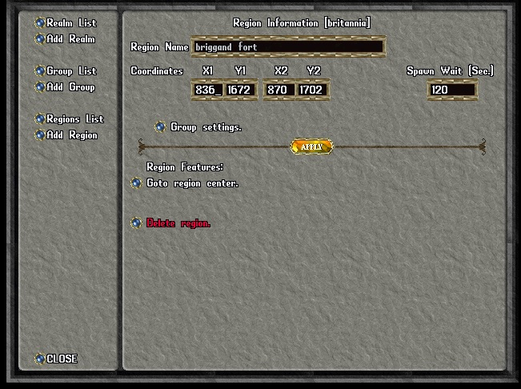
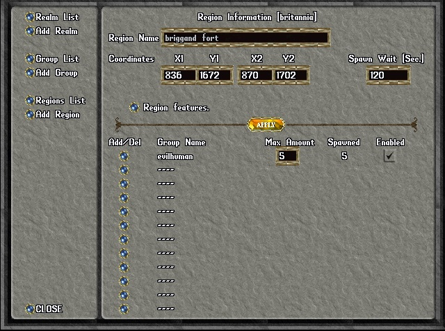
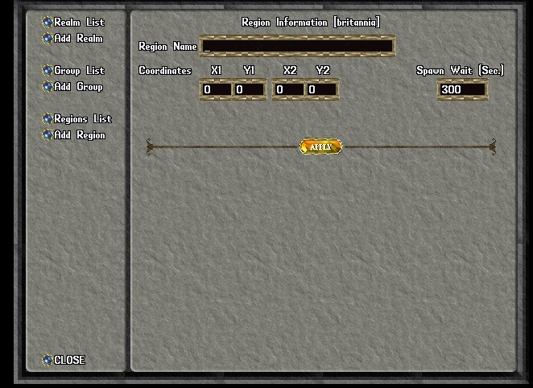
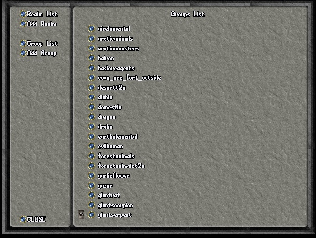
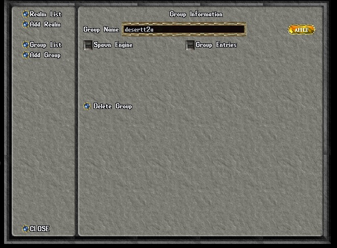
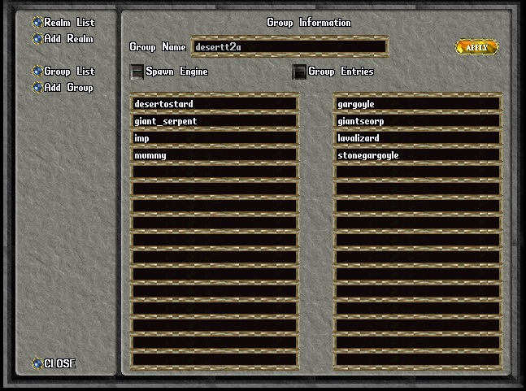

Setting-up
the Region Spawner:
I will sometimes refer to the spawn system as the "region spawner"
because that is what it does, spawns regions. Some people also call
these types of spawn systems as area spawners. I will also use
"facet" or "facets", at times, to refer to POL's internal name for the
various maps, realms.
The region spawner will populate user defined regions in a realm with
NPCs, reagents or items, from user defined groups. It is intended for
large areas that need to be spawned with random NPCs or items. from
predefined groups. For example, if you need to spawn a forest with
"forest animals" you can define a group containing animals you might
find in a forest. Then define the corners of the forest region and
have your forest animals assigned to that region.
You should familiarize yourself with the region spawner by reading the
following guide or keep the guide open in your browser to refer to.
Use the command .spawner to open the region spawner (spawn
system) gump.
The
region spawner gump:
The gump has a menu on the left and the working area
on the right. When you first open it the working area shows the list
of facets (realms) that have been added to the spawn system. In the
example above you can see that Felucca (britannia) and Trammel
(britannia_alt) have been added to the list of facets
to be spawned.

The Add Realm gump:
To add a facet, left-click on the Add Realm button and you will see a
list of available facets that can be added. As you click each button
of the additional facets you want to add, the facet you chose will be
removed from the list of available facets. To return to the realm
(facet) list, click on the Realm List in the menu on the left.

The Regions List gump:
To view the regions defined for a facet, or realm, click on the button
next to the facet. The Felucca facet (britannia realm) has predefined
regions as you can see in the following example.

The Region Information gump:
To view the information about a particular region, click the button
next to that region. From here you can go to the region center, delete
the region or view the group settings for that region. You can rename
the region. You can change the spawn wait time. That is the time
between each spawn cycle. The region spawner will, at the appropriate
time, check a region and if the NPC count for each group in that
region. If the group's NPC count is less than the maximum, region
spawner will replace any missing NPCs for that group. If you choose to
delete the region, you will be prompted to confirm the delete. If you
make any changes, click the Apply button for those changes to take
place. To add groups to the region, click on the Regions List button.
Then find your new region in the list and click its button.

The Group Settings gump:
Here are the group settings for the brigand_fort region. You can add a
group to spawn in this region by clicking on a button next to an empty
group name. If you click on a button next to a defined group, that
group will be removed from that region. You will not be
asked to confirm the removal of the group. It will simply be removed.
If you add another group to a region, insure that you set a Max Amount
of entries from the group to spawn, up to 999, and check the Enabled
check box is checked. Always remember to click the Apply button after
making any changes.

The Add Region gump:
You can also define new regions for a facet. Note that you need to
select a facet in order to have this option, and Regions List
available. Before you add a region to the spawn system you need to
know the coordinates for the North-West X and Y (X1, Y1) and
South-East X an Y (X2, Y2) of that region. Go to the North-West corner
and enter the .whereat command. Target the NW corner and enter the X
and Y coordinates in X1 and Y1 respectively. Now do the same for the
SE corner but enter the X and Y in X2 and Y2. Now decide on a name for
this region and then decide what the delay should be between spawns of
this region. Click Apply. You now have a new region, ready for you to
add groups to it.

The Group List gump:
The region spawner spawns an area using groups of NPCs. These groups
can be user defined. However there are some predefined groups for the
developer to choose from. To see the defined groups click on the Group
List button. To view a particular group, click on the button next to
its name.

The Group Information gump:
Here you can see the initial group information for the desertt2a
group. From here you can choose the Spawn Engine used to spawn that
region. I will have more to say on the Spawn Engines later. You can
also delete the group. If you choose to delete a group you will be
prompted to confirm your desire to delete the group before it is
deleted. The last thing, and the most important thing, is you can view
the group entries. These are the things in a group that you wish to
spawn in that region, in this case, desert NPCs.

The Group Entries gump:
You can create groups of NPCs, items or reagents. I will refer mostly
to NPCs when talking about groups. Once you have decided on the type
of things you want to spawn, choose the appropriate Spawn Engine. If
you forget to choose an engine, the group is invalid and will not
save. These are the current entries for the group desertt2a. Note you
may add NPCs to the group. You may also remove NPCs from the group by
clicking in the entry and backspacing to delete the NPC. Press Apply
if you make any changes.

I think that covers most of setting up a region. If you find I have
missed anything or made a mistake, feel free to contact the POL Distro
Team or make the addition or correction yourself and submit a pull
request on GitHub.